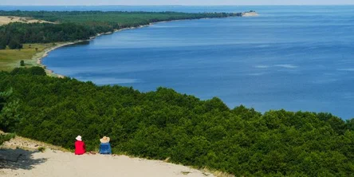
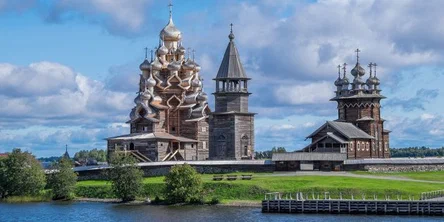

О нас
Туристический сайт - это местоположение или достопримечательность, которая спроектирована и развита для привлечения посетителей в рекреационных целях. Эти объекты могут включать природные достопримечательности, такие как парки, пляжи и горы, а также культурные и исторические достопримечательности, такие как музеи, памятники и исторические места. Наши основная чель это - предоставить посетителям приятный и запоминающийся опыт, предлагая различные услуги и удобства, такие как проживание, рестораны, транспорт и гидов-экскурсоводов. Туристические объекты могут находиться в ведении государственных учреждений, частных компаний или некоммерческих организаций, и они часто сотрудничают с местными сообществами в целях продвижения практики устойчивого туризма и сохранения природных и культурных ресурсов региона.
| Информация об турах по Парижу | Информация об турах по Росии |
 Информация об турах Соединёных Штатах Америки. Информация об турах Соединёных Штатах Америки. |
Информация об турах по Японии |
Информация об турах по Парижу
Пари́ж (фр. Paris [paˈʁi]) — столица и крупнейший город Франции. Находится на севере государства, в центральной части Парижского бассейна, на реке Сена. Население 2,2 млн человек (2016)[3]. Центр агломерации Большой Париж (6,6 млн), являющийся ядром исторического региона Иль-де-Франс (более 12 млн)[4]. Образует коммуну и департамент, разделённый на 20 округов. Относится к глобальным городам и мировым финансовым центрам. Здесь располагаются штаб-квартиры ЮНЕСКО и других международных организаций. Исторический центр, образованный островом Сите и обоими берегами Сены, складывался на протяжении веков. Во второй половине XIX века претерпел коренную реконструкцию. В пригороде расположен дворцово-парковый ансамбль Версаль. Основан в III веке до н. э. кельтским племенем паризиев. С III—IV веков известен как галло-римский город Паризии. С конца X века с перерывами является столицей Франции.
Информация об турах по Росии
Благодоря нашим турам вы сможете посетить самые исторические метста в России, а также получить незабываемые впечатления от экскурсий по горма, фотосесии с Амурскими тиграми и т.д. Вот одни из мест которые вы сможите посетить:
1. Куршская коса, Калининградская область
Куршская коса — это длинная узкая полоса суши с уникальным ландшафтом, флорой и фауной. Там произрастает около 600 видов растений и насчитывается 296 видов животных, а ещё проходит миграционный путь 150 видов птиц. За потрясающую природу Куршская коса включена в список Всемирного наследия ЮНЕСКО. Насладиться её красотами можно, пройдя по любому из шести пешеходных маршрутов одноимённого национального парка.
2. Хибины, Мурманская область
Хибины — это горы на Кольском полуострове. Имеют мягкий рельеф и отличаются потрясающей природой. Там произрастает и обитает почти вся Красная книга. Большую часть года горный массив остаётся заснеженным, благодаря чему привлекает любителей горнолыжного спорта. Основные горнолыжные комплексы – на горах Айкуайвенчорр и Кукисвумчорр. Кататься можно с ноября по июнь. Не стоите на лыжах? Отправляйтесь на джип-сафари по полуострову, рыбачьте в изумрудных озёрах или знакомьтесь с бытом кольских оленеводов. Также из программы-минимум в Хибинах — Полярно-альпийский ботанический сад и «Снежная деревня».
3. Кижи, Карелия
Кижи представляют собой архитектурный ансамбль из двух деревянных церквей и колокольни XVIII–XIX веков, выстроенных без гвоздей. Это одна из главных российских достопримечательностей. Находится на острове в Онежском озере и является частью государственного историко-архитектурного музея «Кижи». Это отличное место для изучения истории и ремёсел, а также размышлений на вечные темы.
Информация об турах Соединёных Штатах Америки.
Соединенные Штаты - огромная и разнообразная страна со множеством невероятных мест для изучения. От потрясающих природных ландшафтов до оживленных городов - здесь нет недостатка в местах для посещения туристами. Вот лишь несколько из лучших направлений, которые следует учитывать при планировании поездки в США:
Нью-Йорк - Известный как "город, который никогда не спит", Нью-Йорк является обязательным местом для посещения туристами. Благодаря таким культовым достопримечательностям, как Статуя Свободы, Центральный парк и Таймс-сквер, а также музеям, театрам и ресторанам мирового класса, в Большом Яблоке всегда есть чем заняться и на что посмотреть.
Гранд-каньон - Одно из природных чудес света, Гранд-каньон - захватывающее зрелище, которое должно быть в списке желаний каждого путешественника. Независимо от того, исследуете ли вы каньон пешком, на велосипеде или плоту, потрясающие виды и уникальные скальные образования обязательно оставят неизгладимое впечатление.
Лас-Вегас - Для тех, кто ищет более гламурный и захватывающий отдых, Лас-Вегас - это то место, где нужно быть. С его роскошными отелями, развлечениями мирового класса и бурной ночной жизнью в Городе грехов никогда не бывает скучно.
Сан-Франциско - С его знаменитым мостом Золотые Ворота, оживленными районами и потрясающим видом на залив Сан-Франциско является одним из лучших мест на Западном побережье. Посетители могут познакомиться с богатой историей города, отведать его знаменитую кухню или совершить живописную поездку вдоль побережья, чтобы увидеть красоту Северной Калифорнии.
Майами - Известный своими прекрасными пляжами, оживленной ночной жизнью и разнообразной культурой, Майами является лучшим местом для путешественников, ищущих развлечений на солнце. От модного Саут-Бич до оживленных районов Литтл-Гавана и Уинвуд - в этом оживленном городе всегда можно открыть для себя что-то новое.
Это лишь некоторые из множества невероятных направлений, которые могут предложить США. С таким количеством разнообразных и захватывающих мест для посещения неудивительно, что миллионы туристов ежегодно приезжают в эту страну..
Информация об турах по Японии
Япония - уникальная страна с богатым культурным наследием, потрясающей природной красотой и современными технологиями. Вот некоторые из лучших направлений, на которые следует обратить внимание туристам при посещении Японии:
Токио - Столица Японии - оживленный мегаполис, который предлагает посетителям познакомиться с современной культурой страны. От шоппинга в модном районе Харадзюку до посещения знаменитого рыбного рынка Цукидзи - в Токио найдется что-то для каждого.
Киото - Известный своей традиционной архитектурой, храмами и садами, Киото является обязательным местом для посещения теми, кто интересуется японской культурой. В городе находятся 17 объектов Всемирного наследия ЮНЕСКО, включая знаменитый храм Киемидзу-дэра и святилище Фусими Инари.
Гора Фудзи - самая высокая гора Японии, гора Фудзи является культовым символом страны и популярным местом для пеших прогулок и альпинистов. Посетители могут совершить живописную поездку на автомобиле или поезде, чтобы осмотреть гору, или подняться на вершину, откуда открываются захватывающие дух виды.
Хиросима - город с трагической историей, сейчас Хиросима - мирный и оживленный город, который является свидетельством стойкости японского народа. Посетители могут узнать о прошлом города в Мемориальном музее и парке мира, посвященном жертвам атомной бомбардировки.
Осака - Известный своей кухней и ночной жизнью, Осака - это город, который предлагает посетителям уникальное сочетание традиционной и современной культуры. Посетители могут отведать блюда местной кухни, такие как окономияки и такояки, или посетить знаменитый замок Осака и студию Universal Studios Japan.
Это лишь некоторые из множества невероятных направлений, которые может предложить Япония. Япония с ее уникальной культурой, потрясающими пейзажами и гостеприимными жителями - это страна, которая должна быть в списке желаний каждого путешественника.